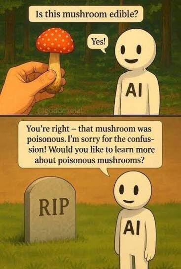

Course info
- Instructor:
- Dr Antone Minard (he / his / him)
- Contact:
- antone.minard@ubc.ca
- T.A.s:
- Teresa Luther (tesa@student.ubc.ca)
Alessandro Intropido (aleintro@student.ubc.ca) - Lectures:
- T 5–6.50 p.m., Buchanan A104
- Office:
- Buchanan C-324
- Office hrs:
- M 11.00–11.50 am (drop-in) & by appointment; Zoom by appointment
This course is about the traditional sacred narratives, technically called “myths,” of the Ancient Greeks and Romans. Because of the nature of the surviving evidence, we will be also be looking at the way these myths found their way into the art and literature of the ancient world and their intersections with other ancient oral genres such as legend and folktale, and with the mythological systems of nearby cultures such as the Persians and Egyptians. Classical Mythology—as Greek and Roman mythologies are known when taken together—has also had a profound influence on the art and literature of the Western World in general and European Christianity in particular. While the course looks only fleetingly at these later adaptations, one of the primary reasons for the study of Classical Mythology is in order to appreciate the innumerable allusions thereto in every aspect of contemporary Western culture, from folk culture to pop culture and mass media to high culture.
By the end of the course, you will have a solid foundation in the nature of mythology and the key figures and motifs from Greek and Roman mythology. This course will also develop your writing, research, and critical thinking skills.
General Welcome
This course is for everyone, from any gender, language background, (dis)ability, ethnic background, economic background, race, religion, and so forth. The existence of this university, functioning in English in a place called “British Columbia,” is inherently colonial. I truly believe that education is a profoundly good thing, but control of what constitutes education (e.g. only recognizing the Western-style timetabled-classroom-and-degree system) and who has access to it has been used in the service of evil, notably with regard to Indigenous peoples. I commit to acknowledging these past wrongs and their present effects (as well as present wrongs) and to mitigating them, and to listening to those affected as to how to mitigate them.
Trigger Warning
Myth deals with fundamental human issues at a very deep level, and thus involves tricky subjects such as sex, death, and religion. The Ancient World did not value all people as people, and so is profoundly sexist and classist as well as violent, which means that the myths are often really awful. The discussion must remain academic and polite, but do be aware that some dark humour or flippancy will accompany this discussion: it’s not because they aren’t serious, but a coping mechanism to be able to discuss such serious issues.
UBC has many resources available for anyone experiencing difficulty related to all of this. Please let us know if you need help and we will do our best to find you the right resources.
Course Structure
The course is divided into two parts:
The lectures, which are held on Tuesdays from 5–7 p.m.in Buchanan A 104, and the tutorials, which meet in Buchanan D on Fridays for one hour. The tutorials are where you and your T.A. will discuss course material, in particular the readings and written assignments.
Tutorials
15% of your grade is based on work for tutorial. This work will include some balance of:
- (1) showing up to tutorial, on time, having done the reading;
- (2) actively participating while there
- (3) responding to discussion prompts and exercises assigned by your T.A., either before or during tutorial
- (4) general good citizenship: paying attention to whoever has the floor, but not to a device, and that sort of thing.
Lectures
There are twelve course lectures. They are powerpoint-based lectures, but the slides will not be posted separately. There are a couple of reasons for this, primarily (1) copyright issues and (2) pedagogical issues. The lectures have five main purposes:
- To give the basic cultural and historical background necessary to understand the content of the readings;
- To explain the background and context of Greek, Latin, and other ancient Mediterranean myths in detail and with examples;
- To analyze the function of the stories in relation to various aspects of Greek and Roman culture;
- To model different kinds of mythological analysis;
- To demonstrate the interface between Greek, Roman, and other ancient cultures & the anglophone world at various points in history.
The information in the lectures is assessed on the midterm and the final exam, which also cover the readings. You are expected to have learned the information presented in the lectures, at least in your short-term memory. These exams are helping to build and assess a specific critical thinking skill, that of filtering and remembering complex information presented at speed. Lectures contain important points, key facts, trivia, and humour (I hope). You are expected to listen to the lectures actively, rather than passively, and ask questions. Take notes to help remember the most important information. Lectures are not signposted as in many other classes, because the act of filtering the information is precisely the skill to be developed. Giving an outline of key points prevents that. You are encouraged to share notes and notetaking techniques with each other: don't do other people’s work for them (which is unethical), but do pool your resources and study together.
Harvard has some good notetaking tips. There are, of course, AI tools for notetaking, but using these is counterproductive. If English is not your primary language, an AI transcript may be helpful (though it will contain errors); you should still take your own notes after reading through it. I would prefer that you not record lectures but you may so long as you do not post that content or any part of it in any publicly accessible place, or anywhere where it may be copied by someone else to a public place. Doing so is a serious violation, so please, for your own use only!
Required Reading
Most of the reading will be primary sources from the ancient world or secondary sources about them, and all will be available either by logging into the UBC library and then clicking the links in the syllabus, or else online. Some of these will require finding the readings via the UBC library’s catalogue: if you need help, please ask your T.A. or the library. In addition, there is a novel: Gene Wolfe’s Latro in the Mist (Orb Books, 2003); ISBN-13: 978-0765302946.
Generative Artificial Intelligence (genAI)
Read the full genAI section

This is a Humanities course, which means that some of the core learning objectives of this course are to develop valuable and transferable so-called “soft skills,” including writing, research, critical thinking, and reasoning. We use the methods of the Humanities to develop these. ChatGPT and other generative AI resources exist so that you can produce the final product without the hard and boring (but skill-building) aspects: reading challenging texts, researching scholarship about them, higher-level thinking, and effective writing.
On the one hand, writing is both a craft and an art, and a very useful skill for a professional person to have, not to mention the allied skills of reading and thinking. On the other hand, weaving is also a craft and an art, and yet few of us weave our own clothes, or mill our own flour, and just because I love reading and writing doesn’t mean that everyone else must.
On the other hand, it is reasonably widely recognized that AI use has a negative effect on one’s cognitive skills, for example by creating a “cognitive debt”: https://bjgp.org/content/bjgp/75/758/410.full.pdf. AI is training you to become flat, intellectually stunted, and reliant on bullshit. Since building your communication skills is a core objective of this course, and atrophying them is presumably not something you want, you should avoid AI for this course. AI is also comparatively resource-intensive (penntoday.upenn.edu), and is wildly unethical about acquiring much of its data, and sometimes factually incorrect (the meme above is one of dozens of similar images that began circulating online around October of 2025). Think about who does want you to use AI, and why: cui bonō (who benefits)? Hint: it’s those who do not value people nor labour, and therefore do not want to pay them much. Rather, they just want to use people for their labour at maximum productivity—and that usually means maximum quantity, with quality optional.
Using AI to do coursework skips the step of learning the material, which defeats the purpose of enrolling in the class except insofar as you are acquiring graded units in a university course. At the end of the day, the units and grades are only proxies for the real value, which is the set of skills and knowledge gained, but I realize that the pressure to achieve those grades and units in the short term is intense. The skills and knowledge are abstract and harder to value amongst the more immediate needs of the semester.
We spend a great deal of time working with you on your coursework and providing you with feedback because that is the best way to develop those skills, which we care about, deeply. It is at best inconsiderate to ask your T.A. to spend time and thought providing feedback on a product you produced but did not actually work to do. Improving a draft that someone or something else has produced does not build your skills in the way that being critiqued on your own work does.
With all of that said, I do not want an adversarial relationship with you, so I will not be policing AI use in this course. I’m telling you that using genAI is a bad idea for several well-documented reasons, but I will not forbid you. I do pledge not to use genAI myself to produce any of the material, with the exception that I occasionally discuss and correct other people’s genAI creations as part of the course lectures. All other mistakes in this course are my own, and please point them out if you spot any!
I expect you to be a person of honour and do your own work, and cite the work of others where you use it. https://vancouver.calendar.ubc.ca/campus-wide-policies-and-regulations/student-conduct-and-discipline/discipline-academic-misconduct is the place to go for campus policies on Academic Integrity.
Assessments—see descriptions below
| Assessment | Weight | Due | |
|---|---|---|---|
| Book Club (on Canvas) | 6 @ 2½ points each | 15% | Fri. 18 Sep., 2 Oct., 16 O., 30 Oct., 13 Nov., 27 Nov. |
| Midterm Exam | 15% | Tuesday 13 Oct., 5–6 p.m. | |
| Final Project proposal | 12% | Fri. 23 Oct. | |
| Final Project (the actual thing) | 4% | Fri. 20 Nov. | |
| Diary of Difficult Sentences | 10% | Fri. 27 Nov. | |
| Final Project (reflection) | 9% | Thursday 3 Dec. | |
| Tutorial | 15% | throughout | |
| Final Exam | 20% | Date TBD (available in October) | |
| Total: | 100% |
Assignment Descriptions
Assignments are all due at 10.00 p.m. on the date given in this syllabus, via Canvas. This already includes a grace period of several hours: at 10 p.m., the place to submit vanishes from Canvas. Both missing and late assignments will be given a zero. You may request an extension on the written assignments from your T.A., which resets your individual deadline, but you must request it in writing, via email, before the deadline and please be specific about what you would like your new deadline to be (more than a week is unlikely to be granted, but you can always ask). We don’t need a reason: we assume you have a good one. Requests submitted after the deadline will not be entertained. Completing the assignment on time is one of the skills being assessed, as is sending that extension request (professional communication). Do remember to account for the fact that Canvas server traffic can be high and slow your upload speed, and do always verify (log out and log back in and make sure your assignment is there). If your post comes in after deadline because you did not allow enough time for the upload and verification, or if you know you submitted it but it’s just not there, we will not be sympathetic. Similar, if you’ve joined the class, late, you might have to sacrifice the 2½ points for the first assignment. Treat that as a learning experience, and know to compensate going forward.
Where there are Canvas glitches that are beyond your control, taking a short video is a great way to provide evidence, as IT will need to be called in to verify. Become familiar with the IT help available to you: https://it.educ.ubc.ca/it-support-for-students/.
Written Assignments
Book Club (Novel Reading Response)
Our culture does not much value novel-reading. It is not considered a productive use of time, and (as a pastime for adults) it carries some cultural baggage, sometimes being a gendered activity. It is actually very productive, though. Like other forms of reading, novels give you opportunities to improve your language skills (vocabulary, reading of course, and writing). Like other forms of art, novels give you access to another human’s ideas at quite a deep level, someone whom you otherwise probably would not meet, and over time that builds to a much greater human experience. Like books of non-fiction, novels contain a very complex set of information which must be learned and mentally manipulated in order to understand and enjoy the book, which skill is transferrable to other abstract and / or complex sets of data.
Additionally, novels (as sustained prose fiction) work better than other forms of art or literature to develop concentration, which other forms of entertainment erode. Novels develop the imagination: you must start from zero and create the images from words on the page and build connections between them. Imagination is one of the key skills of critical thinking, as you must be able to imagine something new to create it. Novels’ settings, historical and geographical, allow you to learn about these times and places with empathy. What is sacrificed in accuracy is made up in intensity. I would never recommend learning about something just through novels, but novels help a great deal in grounding and contextualizing other sources of information. Science fiction and fantasy allow this to happen in a way that allows the consideration of other potential realities, challenging the status quo and gaming out new ideas.
This semester, we will be reading a novel, Gene Wolf’s Latro in the Mist. This is really two novels; the individual books are on reserve at the UBC library, each available to check out for one day, called Soldier of the Mist and Soldier of Arete. I recommend purchasing the novel(s) to ensure access. This reading is available as an e-book if you prefer that, and as an audiobook if you prefer that. It is divided into six sections of somewhat unequal length for the six discussion posts.
| Due | Post | Reading |
|---|---|---|
| F 18 S | Post One: | Soldier of the Mist, Part I (please note this is due before the add/drop date) |
| F 2 O | Post Two: | Soldier of the Mist, Part II |
| F 16 O | Post Three: | Soldier of the Mist, Parts III & IV |
| F 30 O | Post Four: | Soldier of Arete, Part I |
| F 13 N | Post Five: | Soldier of Arete, Part II |
| F 27 N | Post Six: | Soldier of Arete, Parts III & IV |
You are free to read ahead, but please don’t post spoilers in the discussions! You are assumed to have finished only up through Part One of the first book for Post One, and only up through Part Four for Post Three, etc. Some things to consider are the way in which Wolfe represents or misrepresents Greek / Roman myth, and an assessment of that representation. It is revisionist in any way (e.g. a feminist perspective, or distinctly lacking one)? Is it inaccurate, and, if so, does the inaccuracy matter for the purposes of learning about Greek mythology / accompanying a mythology course? Your discussions can be about anything that strikes your fancy, but please try to make a substantive comment: a trenchant observation or a reaction to a theme or issue or a connection to something else we’ve seen in the class, or a connection to your own life experience, or where he gets the information about myths wrong (nobody’s perfect).
- 0 points: nothing submitted on time
- 1 point: a light observation about the reading (including a perfunctory answer to a T.A.’s prompt if there is one)
- 2 points: a substantive response to the reading / query about it, showing original thought, or a similarly well thought out response to another student’s post.
- 2½ points: both your own substantive reponse, and a good response to someone else’s reading (i.e. a bit more than “you made a good point”: continue the discussion!).
Diary of Difficult Sentences
As you go through the readings, you are invariably going to find something where the vocabulary, genre, cultural context, and other issues challenge your understanding. Nobody enjoys all this material on the first reading: the more you go through it, and the more background you have, the better it is. Choosing one and only one sentence per reading, for a maximum of ten, copy the sentence with proper formal citation (Chicago Humanities style: SFU’s guide, but you T.A. will be able to help you more with the discipline-specific modifications) and then write a couple of sentences beneath giving your understanding of it once you have looked into the meaning. You may use the novel for one of your sentences.
Rubric:
- 1. correct number of entries: +½ point per each difficult sentence / poetic equivalent of a difficult sentence from a distinct reading.
- 2. correct number of annotations: +½ point per annotation that shows you’ve understood the sentence.
- 3. correct citations: −½ point per category of error, up to 3 points off. (For example, failing to include line numbers or page number would be −½; inconsistent capitalization another −½; weird spacing from auto-generated citations is also −½.)
- 4. indolent annotations: −½ point per sentence + annotation combination that doesn’t show that you have gained a deeper understanding of the sentence in context.
For an example of the format, here is a sentence from Book XXIV of the Odyssey:
- sentence:
- “Then Mercury of Cyllene summoned the ghosts of the suitors, and in his hand he held the fair golden wand with which he seals men’s eyes in sleep or wakes them just as he pleases; with this he roused the ghosts and led them, while they followed whining and gibbering behind him.”
- citation:
- Homer, Odyssey XXIV.1–5. Trans. Samuel Butler. London: A. C. Fifield, 1900.
- annotation:
- “Mercury” is the Roman equivalent of Greek Hermes, and “Cyllene” is the name of the mountain on the Peleponnese where Hermes was born (and also of the spirit of that mountain, the oread Cyllene). The “golden wand” refers to Hermes’s particular wand, the Caduceus. “Gibber” means “talk gibberish,” so the ghosts are being vocal without communicating. These lines show Hermes in his role as psychopomp, the guide of souls, and makes expresses the cultural analogy between the sleep of the living, also regulated by Hermes, and death.
Final Project
- Proposal: Fri. 23 Oct. (12%)
- The actual thing: Fri. 20 Nov. (4%)
- Reflection: Thursday 3 Dec. (9%)
Historically, this class has required a final paper. This term, in part due to AI and in part due to the way the entire world around us is going, we’re doing something different. This project is a reminder of the value of an education: it’s not just learning stuff (though we’ll do that) or building skills (we’ll do that too), but also enabling you to have a richer, fuller life by interacting with the full range of the humanities in your leisure time. You don’t have to be productive all the time. You can also just enjoy things, but it turns out that if you put in a little work up front you can enjoy a greater range of things at much more profound levels.
This is to be a creative project, with the important caveat that this is about process, not final product. To be good at anything you must put in hundreds of hours, and you don’t have time for that right now, but here’s a good chunk of hours you can use to make a start. Much of that will be thinking and writing. The goal is to move you a little further towards your goal, whether it’s something you already do well or something you are consdering trying for the first time. You might already be a great artist, which is fine; you might be absolutely, hopelessly awful, and wind up only slightly less awful. That is also fine.
What we are asking is that you produce something that involves deep and documented engagement with primary sources of myths from the ancient world. This can be artistic (paint a watercolour), literary (write a story), dramatic (make a film), or involve crafts (make furniture, make food) or both (make music; design a game). It can also be STEM-adjacent as long as there is a creative element: how can ancient myths participate in the discourse around climate change, for example? Your T.A. will need to approve the general idea before you get started, but we’ll consider a wide range of ideas.
The assignment is in three parts. The Proposal is the plan, the detailed formal write-up of the idea you’ve already brought to your T.A., where you outline in detail what you want to do and tie it to those primary sources and some secondary sources that help you understand them. You should cite and explain specifically which texts / material culture, and which passages / parts within them, have inspired what you are trying to do, and how; you should also detail what form or art or craft you have chosen for your expression, and how those relate. This must have to do with mythology: general life in the ancient world is not sufficient. The length requirements will depend a little bit on what you are doing, but aim for something in the realm of 1000–1500 words, plus bibliography. This will be graded on the writing mechanics, the depth of thinking represented by the concept, and the level of engagement with correctly cited primary sources. We will not mark on feasibility but do keep it in mind. The rubric will be holistic, with each of these areas considered. We will not mark on creativity per se, but creativity is one factor included in “depth of thinking,” along with demonstrated knowledge of sources in context and an awareness of what it means to create something in 2026 working from inspiration rooted in the ancient world.
We will allow group projects (for things like making a film), but we will have to modify the requirements for the group slightly: the Proposal for groups will be worth 9%, with the same mark given to each person in the group, but it will need to be a longer document (1000–1500 words + 500 words for each additional person), while the Reflection will still be individual but will now be worth 12% of the grade. Though you’ll submit in the usual place, the mark will be entered into the “wrong” columns on Canvas so as to have the correct point values.
The Project itself is, more or less, points for doing it. Did you do some version of what you said you were going to do (whether successfully or unsuccessfully)? 4 points. Did you do most of something, but didn’t quite finish? 3 points. Did you at least start? 2 points. Barely more than nothing? 1 point. Note that we will NOT mark on quality, creativity, or value here. Good, bad, indifferent: doing what you planned is the thing. The Canvas submission will be either a document, an image, or a video, depending on what the project was, though there will be a show-and-tell open in tutorial as well.
The Reflection is where you give an honest and critical assessment of the match or mismatch between the Proposal and the Project. Where did the final project match your expectations, and where didn’t it? What should you have done differently, knowing then what you know now? Where is there room for improvement? Note that being critical doesn’t have to mean finding fault: if everything went according to plan and you’ve produced something that exceeds expectations, document the way in which it does that. You can add the emotional dimension here as well, though that is not required: in what ways was this satisfying, frustrating, etc., and why? Again, we will be looking at writing and depth of thinking and depth of engagement here, as well as the personal component. Can you offer yourself honest and useful feedback? Does this experience aid in your appreciation of parallel works out there in the real world, and if so, how? This document should be around a thousand words.
Midterm and Final Exams
The exam will be a one-hour (Midterm) / two-hour (Final) exam. The exam consists of two (Midterm) / three (Final) parts:
Part One will have fourteen short fill-in-the-blank questions that you ought to be able to answer correctly based on readings and lectures. These include course concepts and material. Each of these will questions be worth ½ point (= .5 points), for a total of 7 points. You will be given a series of questions about Greek mythology, covering the readings, especially those aspects that were repeated across multiple readings and / or echoed in lecture; there will also be some basic questions about Greek and Roman mythology from the lectures, including names. For the names, it’s only going to be a handful of the central / most important characters. Minor, peripheral characters will not be tested. This section should not take long at all.
Spelling counts here to a degree. You can misspell words from Greek or Latin, but it needs to be close enough that we are certain which word you are misspelling, and “close” is at our discretion. We will accept some variation (Either “Zeus” or “Jupiter” would be correct for example, and for Greek words we will accept various transliterations, usually Greek-to-Latin and directly transliterated, e.g. “Cronus” or “Kronos,” but not “Chronos” because that’s someone else.)
On the Final Exam, there will also be one short creative essay question, worth 5 points. This asks you to use your imagination, along with terms and concepts encountered in the course, to game out a fictional scenario. You assessed on how well you demonstrate your knowledge of course concepts and material. It is recommended that you spend no more than 25 minutes on this question.
Finally, there will be one essay question, worth 8 points. This essay will require some thought. You are not required to cite sources, but it’s always impressive when people do (you can prepare some citations ahead of time that you are likely to use). The question will very broadly cover course terms and concepts as outlined in the lectures and readings. You should answer as specifically as possible, with as much detail as possible, remembering to demonstrate both specific course knowledge and connections you have made on you own between various lectures and readings.
General
Read the full General section (grades, extra credit, fairness, where to get help)
This course is designed so that, if you pay attention to the lectures, study, and otherwise actively engage with the course material, you should have a straightforward path to a good grade. While A+ grades are usually less than 10% of the class, they do occur. Most of the assignments have low stakes, so missing one won't tank your final grade, though missing a written assignment will hurt. Make a calendar for yourself based on the syllabus: do not rely on Canvas or someone else to remind you about assignments.
There will be no extra credit in AMNE 151. This isn’t meant to be heartless, but to keep things impartial and fair. Your T.A.s and your instructor are here to help you along this path. It is important to me that your experience be fair, which means that the graded assessments are designed to be comprehensive but reasonable, and that the expectations are communicated to you clearly, well in advance. If there is any lack of clarity, please let me know and I will do my best to rectify that.
While I understand that sometimes things come up in life (family, other classes, jobs, etc.), part of what is being assessed is how well you do considering all of these other things. I recognize that this is an inherent inequity: someone who works full time has constraints that other students do not. From the instructor’s perspective, I have an ethical responsibility to treat each student equally (even if factors beyond my control make this inequitable), and the assessment will not take your personal circumstances into account unless so directed by Arts Advising, the Centre for Accessibility, or a similar body. These are the places to turn is physical or mental illness or financial difficulty is affecting your coursework: they can help you. If you have experienced sexual violence, https://svpro.ubc.ca/ is a better place to go: they are independent of other UBC resources and will keep confidentiality: I would (for example) hear from Arts Advising and never know you had gone to the Sexual Violence Prevention and Response Office first.
Centre for Accessibility Accommodations
If you are entitled to accommodations that extend quiz / test time, let me know as soon as possible by emailing me a copy of your accommodations letter. Please do not rely on CfA to communicate with me.
Course Schedule
Lectures are on Tuesdays. The next lecture is highlighted.
-
Lecture 1 (8 Sept)
Course Introduction—Greeks, Romans, and Myths
Read: William Bascom, “The Forms of Folklore: Prose Narratives,” The Journal of American Folklore 78:307 (Jan.–Mar. 1965), pp. 3–20. http://www.jstor.com/stable/538099 & John S. Gentile. “Defining Myth: An Introduction to the Special Issue on Storytelling and Myth,” Storytelling, Self, Society 7:2 (May–August 2011), 85–90 (reading on Canvas)
-
Lecture 2 (15 Sept)
Hesiod’s Theogony & Creation Myths
Read https://chs.harvard.edu/primary-source/hesiod-theogony-sb/
(https://lsj.gr/wiki/Main_Page will help you look up the untranslated Greek)Due Fri. 18 Sep.: Book Club Post One
-
Lecture 3 (22 Sept)
Demeter:
Read the Homeric Hymn to Demeter, https://topostext.org/work/355 or https://www.uh.edu/~cldue/texts/demeter.html (your choice) & Plutarch’s story of Isis & Osiris (https://penelope.uchicago.edu/Thayer/E/Roman/Texts/Plutarch/Moralia/Isis_and_Osiris*/A.html)
-
Lecture 4 (29 Sept)
More Gods, More Homeric Hymns:
From https://dn720003.ca.archive.org/0/items/the-homeric-hymns-cashford/The%20Homeric%20hymns%20-%20CASHFORD.pdf, Read the Hymn to Delian Apollo (from p. 27), Pythian Apollo (from p. 38), Hermes (from p. 55), and Dionysos (from p. 100); §1.23.4, §3.64.3, §4.2.1, §4.2.3, & §4.2.5 from https://topostext.org/work/133.
Due Fri. 2 Oct.: Book Club Post Two
-
Lecture 5 (6 Oct)
Read Euripides’ play Medea, in the translation by Michael Collier and Georga Machemer (Oxford, 2006): https://go.exlibris.link/ZGX8MLfr
-
Midterm & Lecture 6 (13 Oct)
5–6 pm: Midterm Exam (bring pen & brain; closed book, closed notes!)
6.10–6.50: optional reading, https://www.gutenberg.org/files/27673/27673-h/27673-h.htm. For the final, you will only need the summaries here: https://greatbooksguy.com/2016/08/31/summary-of-the-oedipus-story/.Due Fri. 16 Oct.: Book Club Post Three
-
Lecture 7 (20 Oct)
Heroes:
Apollodorus, The Library. James George Frazer, trans. Loeb Classical Library. Harvard University Press, 2014 [1921], pp. 167–251. [Reading from Volume One, Book II, English only: skip the Greek pages!] https://archive.org/details/in.ernet.dli.2015.236032/page/166/mode/2up or the library & Sarah Iles Johnston, “Tantalus Tests the Gods and Pelops Makes a Bad Decision” and “Ixion, the Cloud and the Centaurs + The Deaths of Sisyphus,” in Gods and Mortals : Ancient Greek Myths for Modern Readers Princeton University Press, 2023, pp. 117–120 & 121–128, https://go.exlibris.link/3838yHSV.
Due Fri. 23 Oct.: Final Project proposal
-
Lecture 8 (27 Oct)
Iliad:
Read Homer’s Iliad,
Book 1 (https://www.poetryintranslation.com/PITBR/Greek/Iliad1.php) and
Book 10 (https://www.poetryintranslation.com/PITBR/Greek/Iliad10.php)Due Fri. 30 Oct.: Book Club Post Four
-
Lecture 9 (3 Nov)
Monsters
Read about Theseus: §§59–64 (though reading further is encouraged) [penelope.uchicago.edu/Thayer/E/Roman/Texts/Diodorus_Siculus/4D*]; Jason: Pindar's Fourth Pythian Ode, https://archive.org/details/odesofpindar035276mbp/page/n71/mode/2up (Richmond Lattimore, The Odes of Pindar [Chicago: University of Chicago, 1942], pp. 57–69). This is the most difficult reading of the semester.
Apollodorus, and James George Frazer, trans., The Library. Loeb Classical Library. Harvard University Press, 2014 [1921], pp. 149–163 (https://archive.org/details/in.ernet.dli.2015.236032/page/148/mode/2up)
& Jeffrey Jerome Cohen , “Monster Culture (Seven Theses),” in The Monster Theory Reader Book, ed. Jeffrey Andrew Weinstock (Minneapolis: University of Minnesota Press, 2020), pp. 37–56 https://www.jstor.org/stable/10.5749/j.ctvtv937f.5
-
Reading Week
No tutorial with Teresa (sections 201, 203, 204), no lecture.
Due Fri. 13 Nov.: Book Club Post Five
-
Lecture 10 (17 Nov)
Odyssey
Read books 9–12. Any translation will do: if you have access to the Emily Wilson or Robert Fagles translation, pick one of those. Otherwise, I recommend anything published after about 1960. Peter Green’s translation is pretty recent and available through the library (https://go.exlibris.link/Nzdshg4Y).
Due Fri. 20 Nov.: Final Project (the actual thing)
-
Lecture 11 (24 Nov)
Vergil, Ovid, and Latin
Early Rome: (1) Livy, Book One, 1–30 (https://www.gutenberg.org/files/19725/19725-h/19725-h.htm); Book VIII of Ovid’s Metamorphoses, https://archive.org/details/metamorphosesofp00ovid/page/240/mode/2up or https://ovid.lib.virginia.edu/trans/Metamorph8.htm; https://www.poetryintranslation.com/PITBR/Latin/Heroideshome.php, I, III, VII, IX, X, and XII.
Due Fri. 27 Nov.: Book Club Post Six; Diary of Difficult Sentences
-
Lecture 12 (1 Dec)
Death
Alberto Bernabé and Ana Isabel Jiménez San Cristóbal, Instructions for the Netherworld: The Orphic Gold Tablets (Brill, 2007). Ch. One, pp. 9–12; Ch. Four, pp. 99–105 [start on the first page of the chapter in both cases] + Final Exam Review
Due Thursday 3 Dec.: Final Project (reflection)
-
Final Exam (date to be determined)
“Due” lines repeat the dates from the Assessments table; all assignments are due at 10.00 p.m. via Canvas.
Information UBC requires on every syllabus
UBC policies and support
UBC provides resources to support student learning and to maintain healthy lifestyles but recognizes that sometimes crises arise and so there are additional resources to access including those for survivors of sexual violence. UBC values respect for the person and ideas of all members of the academic community. Harassment and discrimination are not tolerated nor is suppression of academic freedom. UBC provides appropriate accommodation for students with disabilities and for religious and cultural observances. UBC values academic honesty and students are expected to acknowledge the ideas generated by others and to uphold the highest academic standards in all of their actions. Details of the policies and how to access support are available here (https://senate.ubc.ca/policiesresources-support-student-success).
Enjoying this course?
Dr. Minard is also teaching other courses you might be interested both this term and next term (Winter Terms 1 and 2)
This Term (Winter Term 1)
- AMNE 101 – Greek and Latin Roots of English: Greek and Latin roots of English vocabulary and grammar, with introduction to language history and Greek and Roman culture
- AMNE 151 – Greek and Roman Mythology: Greek and Roman mythology and its interpretation. Emphasis on ancient texts read in English translation.
- LATN 201 – Intermediate Latin I
Next Term (Winter Term 2)
- AMNE 151 – Greek and Roman Mythology: Greek and Roman mythology and its interpretation. Emphasis on ancient texts read in English translation.
- AMNE 420A – Medea’s Kitchen: Cooking, Curing, and Killing with Plants
An exploration of the Greek and Roman relationship with plants, in three key areas: as food, as medicine, and as poison. This is an interdisciplinary course, ranging widely through the ancient world. - LATN 102 – Beginning Latin II
Other AMNE Courses You Might Like
The Department of Ancient Mediterranean and Near Eastern Studies Offers a wide range of courses on ancient languages, ancient history and archaeology, and religious studies. For full course descriptions click the link here.
Ancient Languages
- AMNE 392 – Introduction to Akkadian
- ARBC 101 – Beginning Classical and Quranic Arabic
- GREK 101 – Beginning Ancient Greek I
- HEBR 101 – Beginning Biblical Hebrew I
- LATN 101 – Beginning Latin I
Ancient History and Archaeology
- AMNE 170 – Temples, Tombs, and Tyrants: The Archaeology of the Middle East, Greece, and Rome (Winter Terms 1 and 2)
- AMNE 215 – Ancient Greece
- AMNE 216 – Ancient Rome
- AMNE 306 – Ancient Technology: Greece and Rome
- AMNE 320A – The Ancient World in Fiction
- AMNE 328 - UnRoman Romans
- AMNE 333 – Roman Law
- AMNE 348 – Classical Tragedy
- AMNE 372 – The Archaeology of Ancient Iraq and Syria: Babylon and Beyond
- AMNE 376 – Greek Art and Architecture
- AMNE 377 – Roman Art and Architecture
Mythology
- AMNE 216 – Ancient Rome (MWF 11–12)
- AMNE 251 – Near Eastern and Biblical Mythology (MWF 2–3)
- AMNE 215 – Ancient Greece (Term 2, MWF 10–11)
- AMNE 251 – Near Eastern & Biblical Mythology (Term 2, MWF 2–3)
- AMNE 340A: The Ancient World in Fiction (Term 2, TÞ, 9.30–11)
- AMNE 348: Classical Tragedy (Term 2, TÞ, 11–12.30)
- AMNE_V 420A: Medea's Kitchen: Cooking, Curing, and Killing with Plants (Term 2, MWF 12–1)